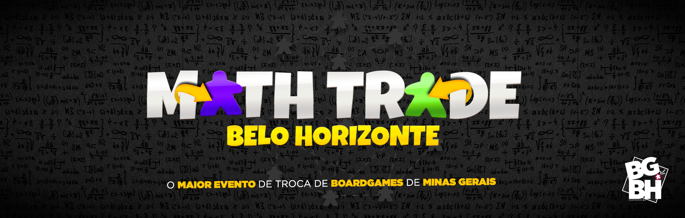

Antes da apresentação das regras, esteja sempre ciente que os organizadores e
moderadores da Math Trade não possuem nenhuma responsabilidade sobre as trocas, entregas
e estado geral dos jogos ofertados.
A função deles é organizar as informações da Math Trade, esclarecer eventuais dúvidas, rodar
o sistema responsável pelas trocas e resolver em parceria com os participantes qualquer
eventual contratempo ocorrido na Math Trade. O sucesso e experiência positiva de todos
depende do compromisso e bom senso de cada um.
REGRA DE OURO: